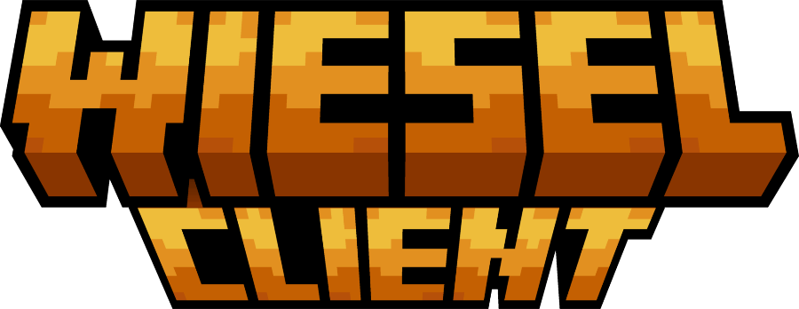
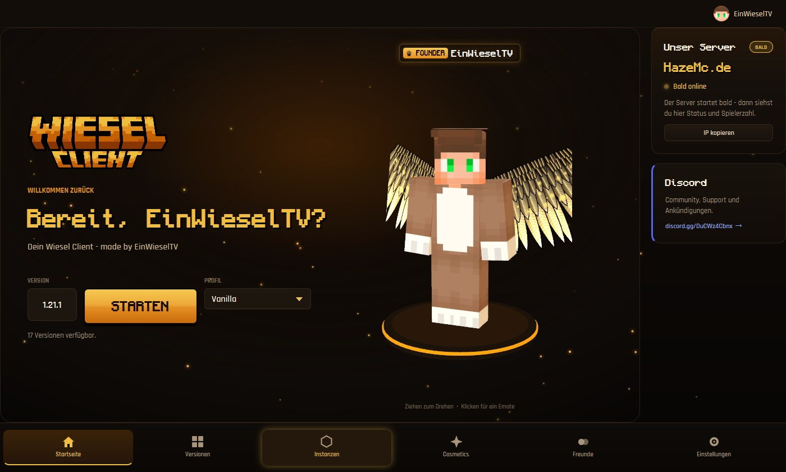
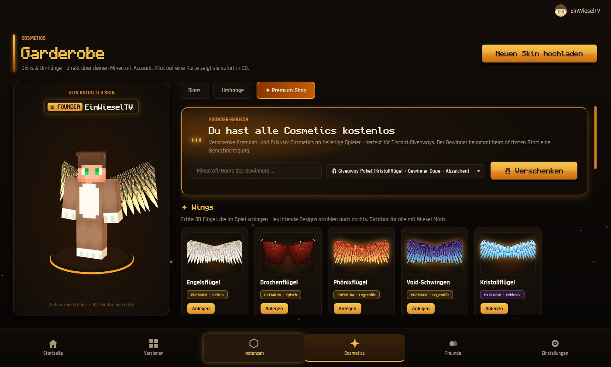
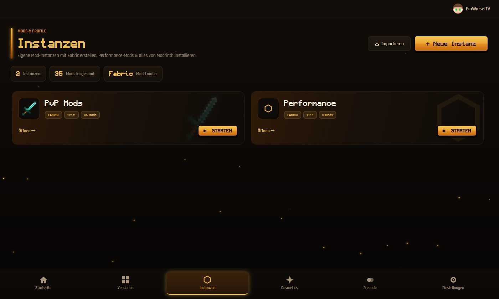

Der kostenlose Minecraft Launcher von EinWieselTV: über 30 eingebaute Wiesel Mods, Freunde-Chat, Wings & Capes und ein FPS-Boost mit einem Klick.



Einmal installieren, einloggen, losspielen – der Rest ist schon eingebaut.
Über 30 Features direkt im Spiel: Keystrokes, Rüstungsanzeige, Zoom, Freelook, eigene Hitbox- & Trefferfarben und mehr – alles per Rechts-Shift.
Füge Freunde hinzu, sieh wer online ist und auf welchem Server – und schreib ihnen, auch direkt im Spiel.
Flügel und Umhänge, die auch andere Wiesel-Client-Spieler sehen. Mit Live-Vorschau an deinem eigenen 3D-Skin.
Ein Klick installiert ein bewährtes Performance-Paket (z. B. Sodium) – spürbar mehr FPS, gerade im PvP.
Eigene Mod-Setups für jede Version – und per Code mit Freunden teilen, die bekommen exakt dieselben Mods.
Eigenes Design bis ins Spiel: neuer Titelbildschirm, das W-Logo in der Tabliste und ein 3D-Skin auf der Startseite.
Dauert ungefähr eine Minute.
Klick oben auf „Für Windows herunterladen“. Die Datei heißt Wiesel Client-….exe und kommt direkt von GitHub.
Doppelklick auf die Datei. Windows zeigt bei neuen Programmen manchmal einen blauen Hinweis:
Dem Assistenten folgen, Launcher starten und mit deinem Microsoft-Konto anmelden – fertig. Viel Spaß!
Berechtigte Frage – bei .exe-Dateien sollte man vorsichtig sein. Hier ehrlich erklärt:
Windows SmartScreen warnt bei jedem neuen Programm, das noch nicht oft heruntergeladen wurde und kein teures Code-Signatur-Zertifikat hat – das ist bei fast allen kleinen Projekten so und heißt nicht, dass etwas gefährlich ist. Mit jedem Download lernt Windows das Programm besser kennen.
Du kannst die Datei außerdem selbst prüfen: Virenscan auf VirusTotal ansehen.
Wiesel Client sieht dein Passwort nie. Beim Login öffnet sich die offizielle Microsoft-Seite (microsoft.com/link), dort gibst du einen kurzen Code ein und meldest dich bei Microsoft selbst an. Der Launcher bekommt danach nur die Spiel-Freigabe, die auf deinem PC gespeichert bleibt.
Nein. Wiesel Client wird nur für deinen Windows-Benutzer installiert – ganz ohne Administrator-Abfrage.
Ganz normal wie jedes Programm: Windows-Einstellungen → Apps → Installierte Apps → „Wiesel Client“ → Deinstallieren.
Nein, der Launcher und alle Wiesel Mods sind kostenlos. Du brauchst nur eine gekaufte Minecraft Java Edition. Einige besondere Cosmetics gibt es als Premium oder bei Giveaways im Discord.
Ja – beim Start prüft der Launcher, ob es eine neue Version gibt, und sagt dir Bescheid.
Hol dir den Wiesel Client und komm auf unseren Discord – für Updates, Giveaways und Leute zum Zocken.